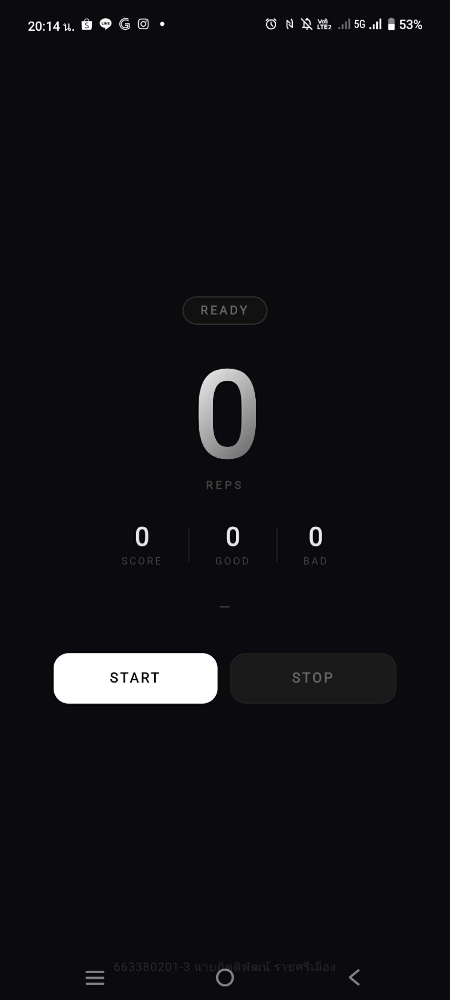
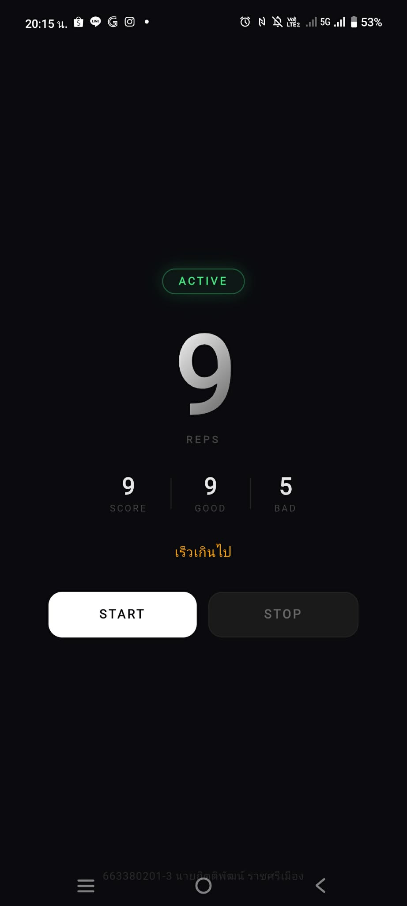
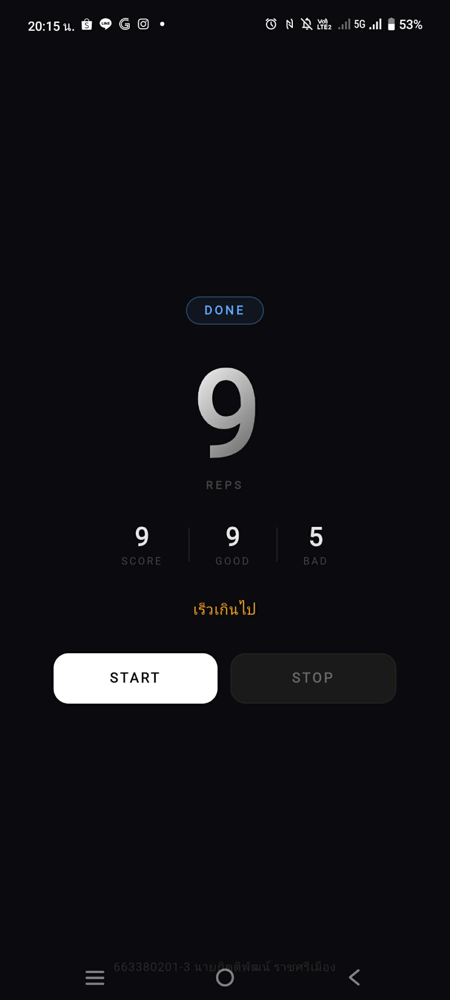

Arm Workout Sensor App คือแอปพลิเคชันออกกำลังกายบนมือถือที่ใช้ Accelerometer ของอุปกรณ์ตรวจจับการเคลื่อนไหวของแขนแบบ Real-time แอปนับจำนวนครั้งการยกแขนขึ้น-ลง (Bicep Curl) โดยอัตโนมัติ จำแนกรูปแบบเป็น Good Rep และ Bad Rep พร้อมระบบคะแนนและฟีดแบ็กผ่าน Text-To-Speech
พัฒนาด้วย Vue 3 + Ionic Framework บน Capacitor สำหรับ Android
และใช้ @capacitor/motion ในการเข้าถึงเซนเซอร์ Accelerometer
และ @capacitor-community/text-to-speech สำหรับการอ่านออกเสียงภาษาไทย
Accelerometer Sensor
อ่านค่า X, Y, Z axis แบบ Real-time เพื่อตรวจจับการเคลื่อนไหวของแขน
Rep Counter
นับจำนวนครั้งการออกกำลังกาย พร้อมแยก Good / Bad Rep จาก Range of Motion และเวลา
Text-To-Speech (TTS)
ประกาศเริ่มออกกำลังกายเป็นภาษาไทยผ่าน TTS เพื่อให้ผู้ใช้ไม่ต้องมองหน้าจอ
Score & Stats
แสดงคะแนน, Good/Bad Reps และ Feedback message แบบ Real-time

📷screen1.png'" />
หน้าจอหลัก (READY)

📷screen2.png'" />
ระหว่างออกกำลังกาย (ACTIVE)

📷screen3.png'" />
สรุปผล (DONE)
ระบบเปิด Accelerometer และ TTS ประกาศ "เริ่มกายบริหารแขน ยกขึ้นจนสุดแล้วลดลง"
MotionService อ่านค่า Accelerometer ทุก Frame ส่งค่า ax, ay, az ไปยัง ArmWorkoutEngine
Engine ตรวจสอบค่า Y-axis เทียบกับ Threshold (UP_TH = 2.0g, DOWN_TH = -1.5g) และ Range of Motion ≥ 3g เพื่อนับ Rep
Good Rep: ทำใน 700–3500ms, Bad Rep: เร็วหรือช้าเกินไป / Range of Motion ไม่ถึง
หยุดเซนเซอร์ แสดงสรุปคะแนน Good/Bad Reps และ Feedback สุดท้าย
Frontend
Vue 3 + TypeScript
Ionic Framework 8
Vite
Native / Capacitor
@capacitor/motion
@capacitor-community/text-to-speech
@capacitor/haptics
Platform
Android (Capacitor)
Web (PWA)
Ionic CLI